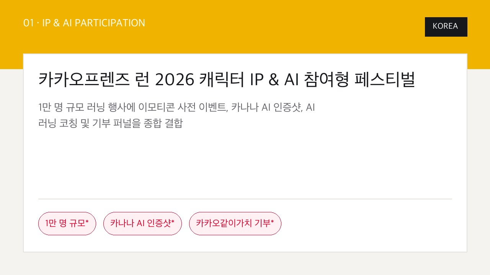
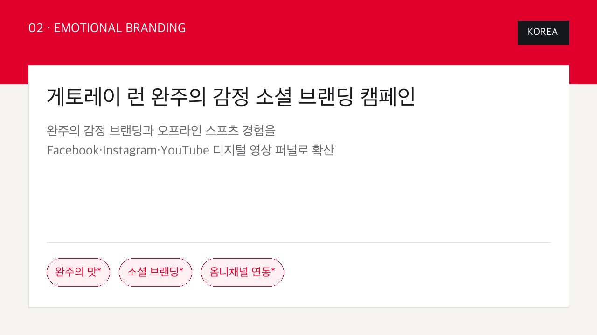
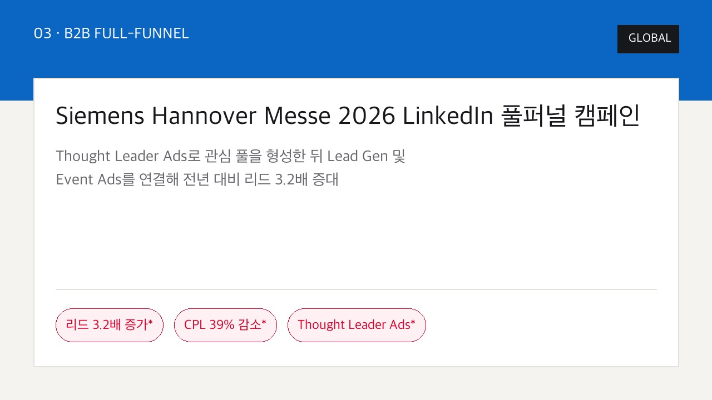
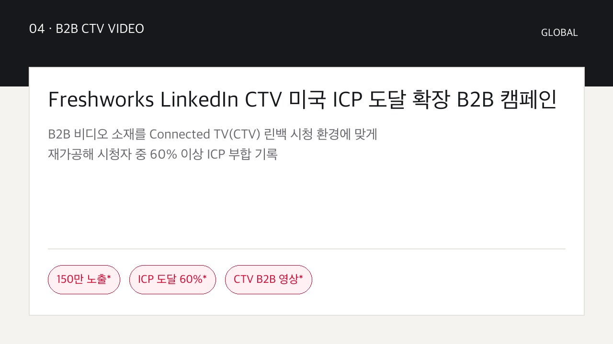
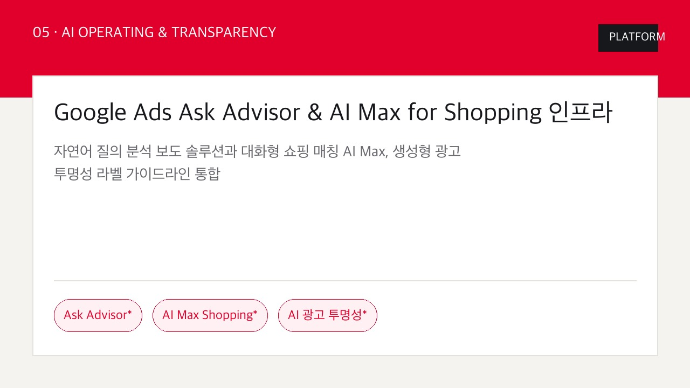
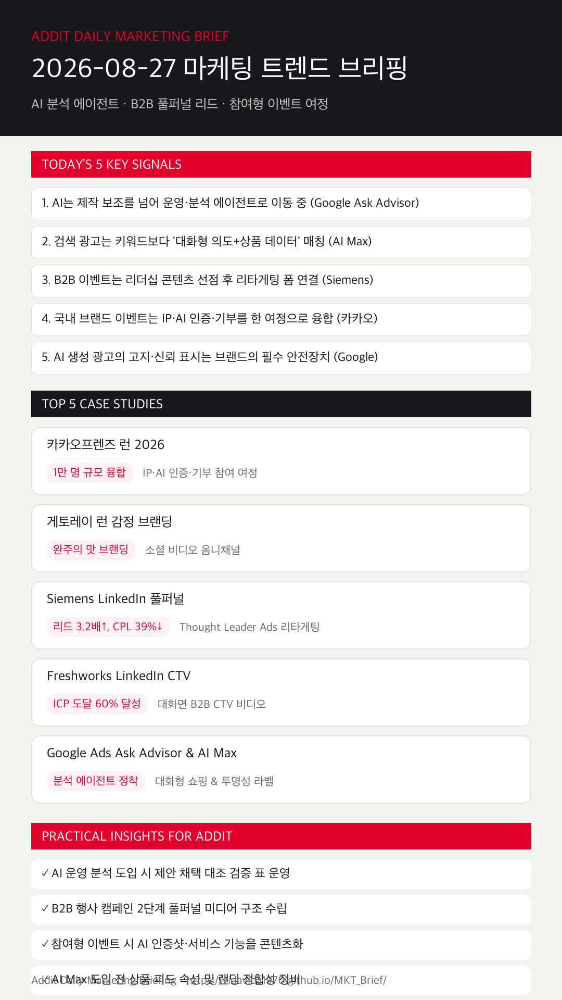

01
AI는 단순 제작 보조를 넘어 운영·분석 에이전트로 정착한다
Google Ask Advisor처럼 자연어 질의, 요약, 시각 보고서를 분석 에이전트 형태로 제공함에 따라 제안 채택 대조 검증 표 운영이 필요합니다. (Google)
카카오프렌즈 런 AI 참여 여정, 게토레이 런 소셜 브랜딩, Siemens LinkedIn 풀퍼널 리드 3.2배, Freshworks CTV 및 Google Ask Advisor 에이전트 전략을 한눈에 확인합니다.
Google Ask Advisor처럼 자연어 질의, 요약, 시각 보고서를 분석 에이전트 형태로 제공함에 따라 제안 채택 대조 검증 표 운영이 필요합니다. (Google)
Google AI Max for Shopping처럼 Merchant Center 속성과 최종 URL 확장을 결합해 대화형 쇼핑 탐색에 직접 대면합니다. (Google)
Siemens 사례처럼 Thought Leader Ads로 관여 풀을 만든 후 Lead Gen 및 Event Ads를 연결해 리드 3.2배 증대를 기록합니다. (LinkedIn)
카카오프렌즈 런 2026처럼 이모티콘 사전 참여, 카나나 AI 인증샷, AI 코칭, 같이가치 기부를 단일 여정으로 설계합니다. (Kakao)
Google Search, YouTube, Discover의 'How this ad was made' 표시 확대에 맞춰 AI 소재 고지 및 승인 기준을 확립합니다. (Google)

KOREA1만 명 규모 러닝 행사에 이모티콘 사전 응모, AI 인증샷, 러닝 코칭, 기부를 연결해 단일 홍보가 아닌 다중 참여 여정으로 완성했습니다.

KOREA오프라인 러닝 완주의 감정 경험을 메시지로 정의하고 Facebook, Instagram, YouTube 소셜 비디오로 확장한 옴니채널 브랜딩입니다.

GLOBAL글로벌 임원 및 기술 전문가 아티클로 리타게팅 풀을 구축하고 무료 티켓 등록 폼을 연동해 리드 3.2배 증가, CPL 39% 절감을 달성했습니다.

GLOBALB2B 비디오 소재를 CTV 대화면 환경에 재가공하여 150만 노출, 50만 명 도달을 기록하고 시청자 중 60% 이상이 이상적 고객군(ICP)에 부합했습니다.

PLATFORM자연어 질의 분석 보조, 대화형 쇼핑 상품 데이터 연동, 'How this ad was made' 투명성 라벨을 통합한 최신 플랫폼 인프라입니다.
Ask Advisor처럼 분석·제안이 자동화될수록 추천 채택 캠페인의 CPA, ROAS, 전환 품질을 대조 검증하는 가이드라인을 운영합니다.
Google Ads & Analytics 근거 보기 →Siemens 사례처럼 임원/전문가 콘텐츠로 관심군을 먼저 모은 후 리드폼 및 이벤트 응모 CTA를 연결해 CPL을 절감합니다.
LinkedIn Siemens 근거 보기 →카카오프렌즈 런 사례처럼 카나나 AI 인증샷 및 코칭 기능을 단순 설명이 아닌 참여와 공유의 이유로 배치해 여정을 구성합니다.
카카오 공식 보도자료 근거 보기 →대화형 의도 매칭 광고 실행 전 Merchant Center SKU 속성, 재고, 최종 URL의 정합성을 사전 체크리스트로 점검합니다.
Google AI Max 근거 보기 →Google 'How this ad was made' 표시 확대에 맞춰 AI 활용 소재의 사실성 및 고지 표시를 크리에이티브 승인 항목에 추가합니다.
Google AI 광고 투명성 근거 보기 →B2B 풀퍼널 이벤트 등록 및 CTV 대화면 영상 타겟팅 성공 사례를 확인합니다.
LinkedIn Marketing 바로가기 →Ask Advisor 분석 에이전트와 AI Max for Shopping 대화형 인프라 업데이트를 검토합니다.
Google Ads Blog 바로가기 →
마케팅 성과는 단순 스튜디오 광고 생산량에서 AI 분석 에이전트 활용, B2B 2단계 풀퍼널 리타게팅, 서비스 기능 연동 참여 여정의 통합 퍼널로 완성됩니다.
{kind=link}